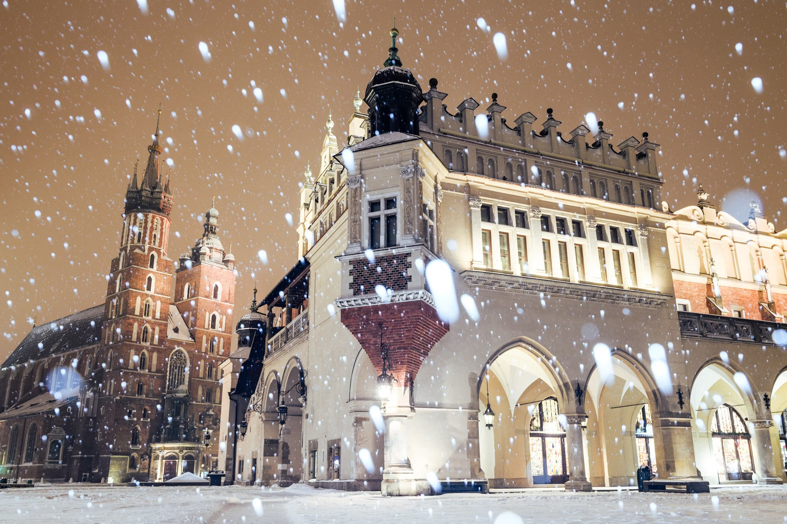
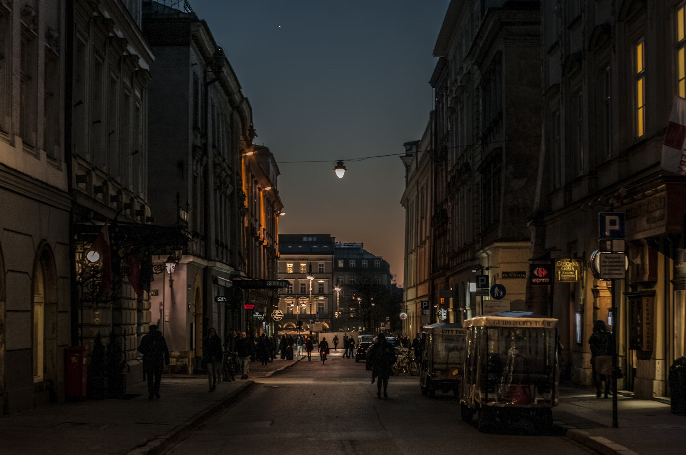

Fotograf blisko Ciebie na każdą okazję
Uchwyć wyjątkowe chwile w sercu Krakowa - profesjonalne sesje, które opowiadają Twoją historię. Z pasją i precyzją, zawsze tam, gdzie potrzebujesz.
Kilka słów o mnie. Kim jestem?
Fotografia to dla mnie nie tylko praca, ale przede wszystkim sposób na uchwycenie chwil, które mijają zbyt szybko. Od najmłodszych lat fascynował mnie świat ukryty za obiektywem, a dziś, po latach doświadczeń, mogę dzielić się tym, co kocham najbardziej - tworzeniem niezapomnianych wspomnień.
Jako fotograf działający w Krakowie, znam to miasto jak własną kieszeń. Wiem, jak złapać najpiękniejsze światło na Wawelu, jak wyciągnąć z Placu Nowego klimat tętniącego życiem Kazimierza, i gdzie znaleźć najskrytsze zakątki, które nadają każdej sesji wyjątkowego charakteru.
 W każdej sesji fotograficznej najważniejsza jest dla mnie autentyczność. Pracuję z pełnym zaangażowaniem, dbając o każdy detal, aby efekt końcowy oddał dokładnie to, czego oczekujesz. Czy to sesja ślubna, rodzinna, czy indywidualna — zawsze stawiam na jakość, precyzję i Twoją satysfakcję.
Odbierz zniżkę
Skorzystaj z wyjątkowej oferty na start! Podaj kod pierwszasesja przy rezerwacji i odbierz 10% zniżki na swoje pierwsze zamówienie. To idealna okazja, aby doświadczyć profesjonalnej sesji fotograficznej w Krakowie i uwiecznić swoje najpiękniejsze chwile w obiektywie jednocześnie oszczędzając pieniądze.